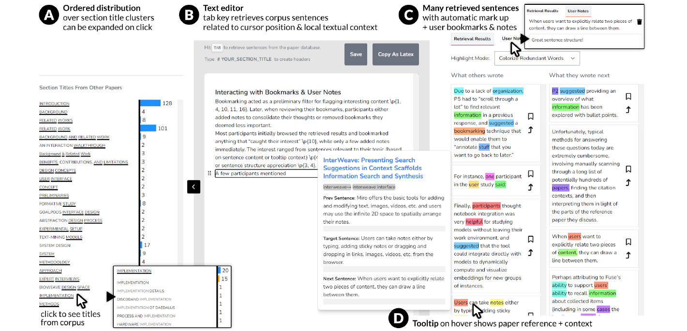
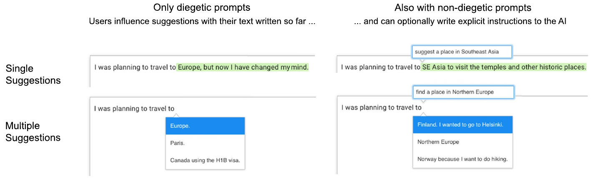
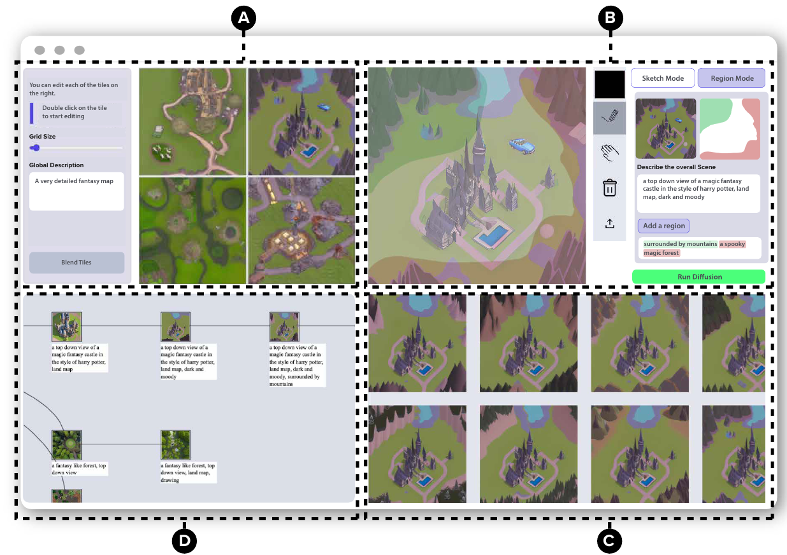
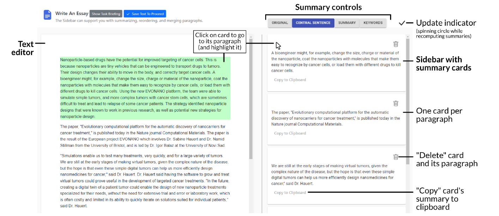
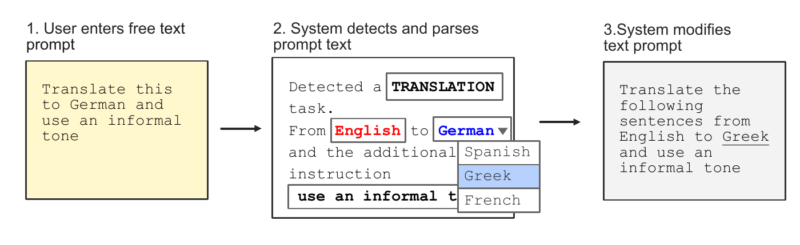
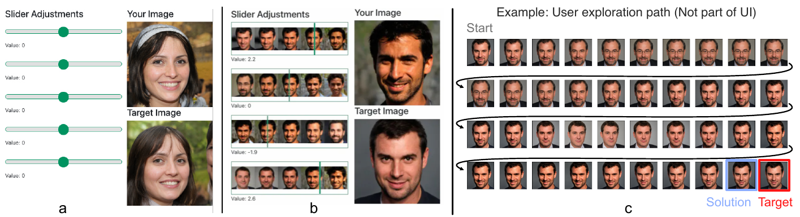
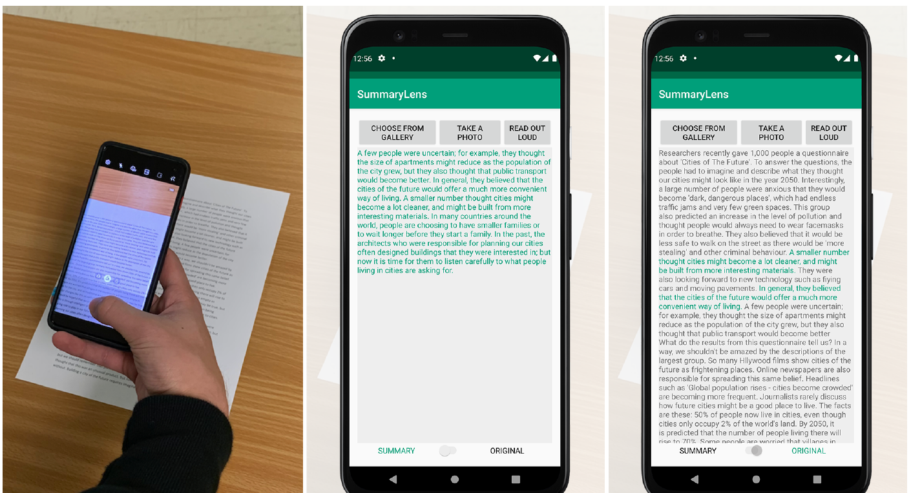
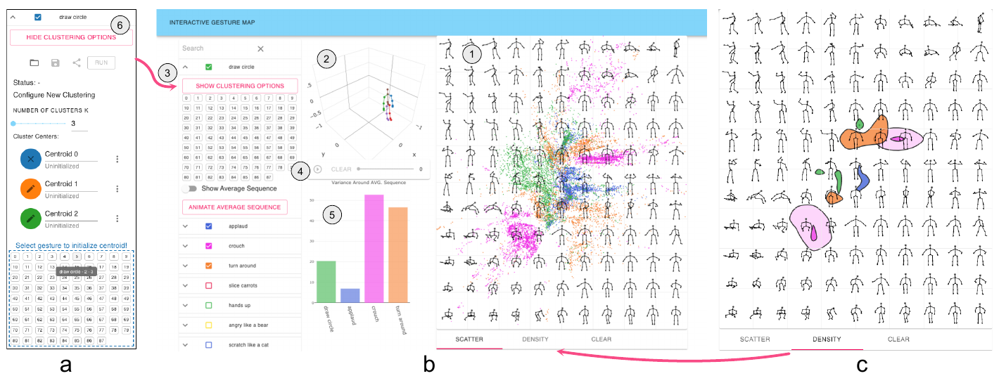
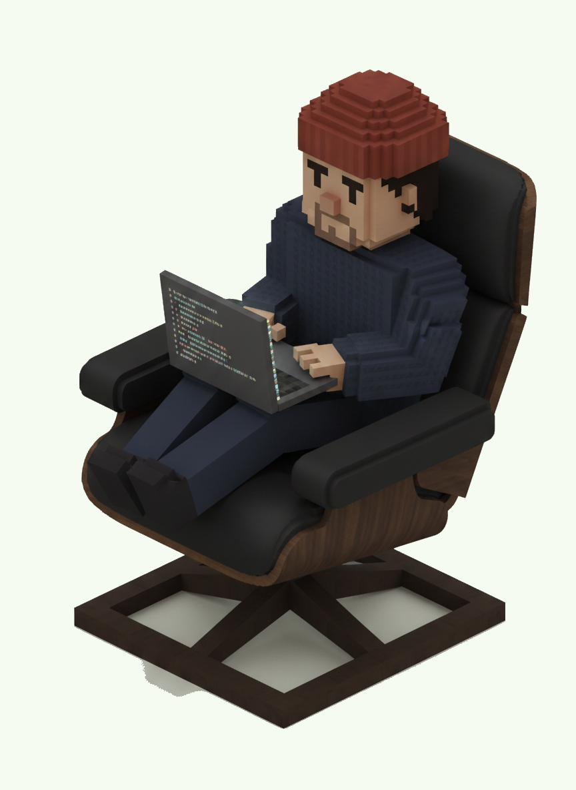

CorpusStudio
A writing environment that shows how others structured the same kind of text, while you write your own. It surfaces sentence patterns and section conventions from a corpus of prior papers, right at the cursor.
I'm a computer scientist in Munich. For five years I studied how people write and create with AI: a PhD in human-computer interaction in Bayreuth, with research stays at Autodesk, Meta Reality Labs and Harvard. After that I co-founded two companies, one of them through Y Combinator.
I'm now building something new. The themes I keep coming back to are voice as an interface, real-time interaction, and assistance that offers help before you ask. This page collects the work so far.

A writing environment that shows how others structured the same kind of text, while you write your own. It surfaces sentence patterns and section conventions from a corpus of prior papers, right at the cursor.

A study with 129 people writing with LLMs. Most preferred choosing between suggestions over instructing the model. Introduced the distinction between diegetic and non-diegetic prompting.


An editor that keeps a short summary of each paragraph in the margin. Writers used the summaries to notice what their text actually said, then revised it.

An early paper on prompting as an interaction problem, written before prompting was a household word. It became my most cited work.
How people set up context-aware LLM assistance for tasks in their own surroundings. Built during my time at Meta Reality Labs.

How people explore generative image models with sliders, and what small preview thumbnails change about that exploration.

A small app: point your camera at a text, get a summary. A probe of what everyday summarization could feel like.

A tool that maps hours of full-body motion recordings into a 2D overview you can explore, compare and count.
I'm building something new. It isn't public yet.
